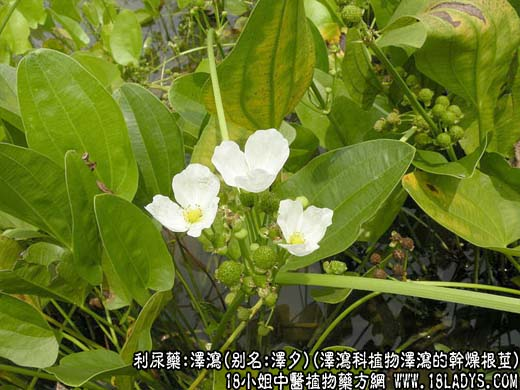
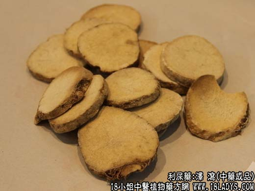
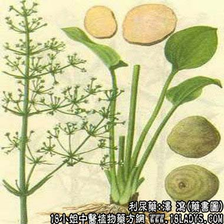

本品为常用中药，《神农本草经》列为上品。李时珍谓：“去水曰泻，如泽水之泻也”，故名。
别名：泽夕。
来源：为泽泻科植物泽泻（Alis ma orietnale（Sam.）Juze P.）的干燥根茎，均为栽培。
产地：建泽泻：主产于福建的建瓯。川泽泻：主产于四川的灌县。产泽泻：主产于广东的湛江。
性状鉴别：建泽泻：呈圆球形或倒卵圆形。长约4～7厘米。直径约3～5厘米。外表皮黄白色。顶端有茎痕。周身有不规则的环状隆起岗（俗称岗纹）及多数散在突起小店状的须根痕。质坚实。断面淡黄白色，肉眼 观察显粉性，颗粒，显微镜下观察如海绵体，但较紧密。味甘微苦。以个大独茎，色黄白，质坚者为好。
川泽泻：呈椭圆形，个稍小于建泽泻。外表淡黄褐色，顶端茎痕略小，有的具2～3个茎基痕，形成畸形、皮略粗，环状隆起岗不明显，有多数散在须根痕。下端较尖，多数带有突起的疣状疙瘩，疙瘩周围有未尽的须根残留。质亦坚实 ，断面深乳黄色，显微镜下观察海绵状结构略松泡，气味与建泽同。习惯认为品质不及建泽泻好。
广泽泻：长圆形，长约4～7厘米，直径2.5～4厘米。外表皮黄白色，亦不显隆起岗纹。下端亦带有多数突起的疣状疙瘩或脱落疙瘩后的白色凹痕，质较轻松，味苦甜不一。
主要成分：1、挥发油，内含糠醛；2、其乙醇提液含生物硷、植物甾醇及天门冬素；3、其水及苯提取物有抗脂肪肝成分。
功效与作用：1、利尿。作用显著，能增加尿量、尿素与氯化物的排泄。2、降胆固醇。动物实验发现，泽泻对家兔血中胆固醇含量有轻度抑制作用，能减轻动脉粥样硬化的发展，但临床尚未用于治疗动脉硬化。
炮制：切片生用或盐水炒用。
性味：甘寒。
归经：入肾、膀胱经。
功能：利水渗湿泻热。
主治：小便不利，淋病尿血，湿热痰饮，水肿胀满，脚气。
临床应用：1、用于肾炎水肿或脚气水肿，取其利尿消肿作用。常配茯苓、白术，方如四苓散。可以此方为基础，随证加减。
2、用于治疗由肾阴不足（肾阴虚）、肾火亢盛而引起的遗精、滑精、眩晕等证候，取其有泻肾火的作用（可能与利尿清热有关），但须配合其他滋补肾阴的药物，如熟地、山萸肉等，方如六味地黄丸。六味地黄丸既有熟地、萸肉、山药之补，又有泽泻之泻，泻去肾火，使补药更能发挥作用，这样一泻一补，一开一合，相反而相成，共奏补肾阴之效。但要注意，由肾阳虚而引起的滑精以及无湿热者，则不宜用泽泻。
附：前任曾说泽泻能治消渴（糖尿病属消渴范畴），现代实验也初步证实泽泻有降血糖作用，但现代临床实践极少用泽泻为主药治糖尿病。至于六味地黄丸虽可用治糖尿病，但主要作用不再泽泻。
用量：6～15g分量不宜过大。
处方举例：四苓散（《明医指掌》）茯苓12g，泽泻6g，猪苓9g，白术9g，水煎服。
注：1、泽泻商品，原粉建泽泻（包括江西广昌）与川泽泻两大类。由于利用秋冬水田空闲期间栽种，并可利用泽泻的叶压一次绿肥，因而江南各省多用引种，并已成功。因引种的来源不同，商品形态不一，但基本 上相差不大。如广泽泻，在湛江地区，多在入冬栽培，初春采收。茎叶翻于土中，压作绿肥。这样一举两得，既生产 了泽泻又压了绿肥。但生长日期较短，泽泻个体较小，不太成熟，因而气味也不同。一般成熟度较搞的味较甜；成熟度 较低的则较苦淡。
2、由于泽泻在加工干燥时，多用火炕烘干，内外色碴均会受一定影响，如火大则色重色褐，火小泽淡，黄白，故外色内碴，不尽统一。